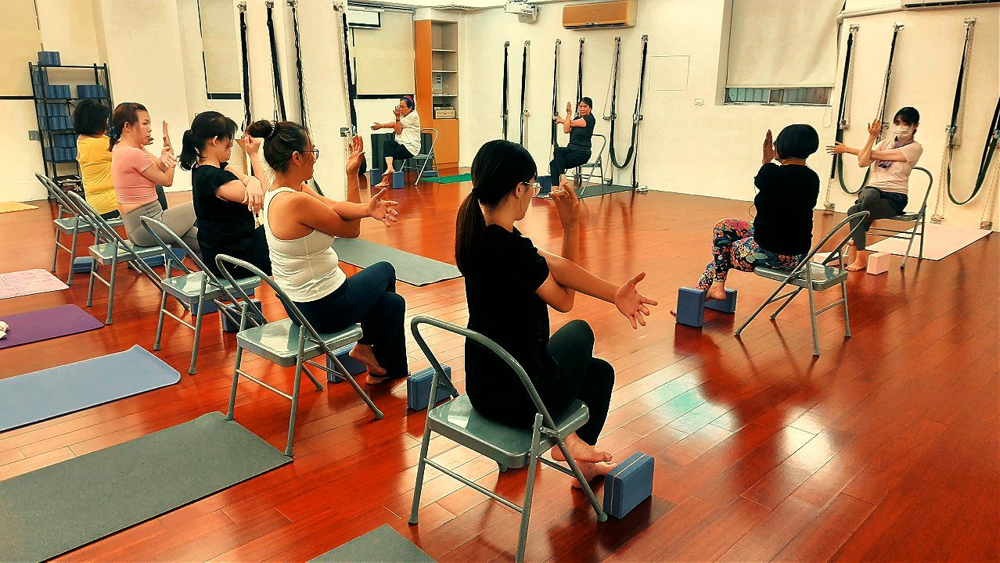

通勤族在車上就能做的姿勢微調

你有沒有發現，明明還沒開始上班，光是通勤那半小時就先累了一半？坐上駕駛座、或擠上捷運公車，身體一放鬆就往下垮，脖子不知不覺往前送，下車的時候肩頸已經先痠一輪。其實這段「死時間」，是可以偷偷幫身體加分的。
為什麼一坐上車，姿勢就先垮了
車上的座椅通常偏軟、偏後仰，加上路上要盯前方、握方向盤或抓吊環，身體會不自覺往前縮。時間一久，骨盆往後滾、腰椎失去支撐，上半身就靠上斜方肌和提肩胛肌硬撐著頭的重量。頭每往前一點，這兩條肌肉就要多出一分力，久了自然又緊又痠。
- 骨盆往後垮：屁股往前滑、腰懸空，豎脊肌整路緊繃。
- 頭往前送：盯螢幕、看路、滑手機，頸胸交界壓力全累積在後頸。
- 歪一邊坐：長時間單手扶、身體靠向門邊，左右不對稱慢慢養成高低肩。
通勤傷的不是「坐」這件事，而是「垮著坐很久」——把骨盆坐正坐到底，身體就不用再硬撐。
先把「地基」放對：骨盆與支撐
上車坐定的第一件事，不是調整脖子，而是先把骨盆坐正、坐到底——讓屁股貼滿椅面最深處，兩邊坐骨平均踩在座位上，這樣腰椎才有支撐，上半身就不會再往前滑。骨盆一歪，整個上半身都會跟著代償，這也是為什麼骨盆前傾＝小腹凸？先看懂再收這件事，其實跟你的肩頸痠痛是同一條線上的問題。
接著善用車上現成的工具：椅背幫你撐住腰與背，頭枕的位置調到後腦杓能輕輕靠到——不是把頭「頂」上去，而是有個依靠，讓後頸肌肉可以稍微鬆一口氣。搭乘大眾運輸時，盡量兩腳都踩穩地板、雙手平均施力，避免整路歪靠同一邊。
壁繩教會身體的「被支撐感」，可以帶著走
很多人第一次上壁繩課會驚訝：原來身體「有支撐」的時候，可以這麼放鬆又這麼正。壁繩把你拉開、托住，讓平常緊縮的胸大肌、胸小肌被打開，該出力的下斜方肌、菱形肌重新學會工作。這種「被撐住、然後找回正位」的感覺，練久了身體會記住，你在車上靠椅背、靠頭枕時，也會更懂得怎麼把力氣交給支撐，而不是自己硬撐。想先了解它在做什麼，可以看看壁繩到底是什麼？第一次上課會做什麼？。

等紅燈、停等時，做這三個微動作
塞車、等紅燈、捷運到站前的空檔，就是最好的微調時間。動作都很小、不誇張，重點是趁機把垮掉的姿勢「歸位」一下：
- 肩胛後收下壓：想像把兩片肩胛骨輕輕往中間、往下收，肩膀離開耳朵，喚醒下斜方肌。
- 開胸深呼吸：吸氣時讓胸口打開、橫膈膜往下沉，把整路縮著的前胸鬆開。
- 收下巴：不是低頭，而是像被人輕輕往後推後腦一點，讓前送的頭找回位置，喚醒深頸屈肌。
這些只在車子完全停下、或你是乘客時做。開車時一切以看路、專心為優先，絕不做會分心、需要閉眼或大幅度扭轉的動作。
現在就能做的一個小練習
下次坐上車、繫好安全帶還沒發動前，給自己一個「重開機」的十秒：先把屁股往後坐到底，讓腰貼上椅背；吸一口氣，感覺胸口微微打開、脊椎輕輕拉長；吐氣時肩膀往下沉、下巴輕輕收回一點。就這樣一次深呼吸，把姿勢重設好再上路。
老實說，這一次不會讓你的肩頸馬上不痠——它的價值在於「常常做」。每天上下班、每次停等紅燈都順手做一下，身體會慢慢把「坐正、被支撐」當成習慣，而不是每天靠肌肉硬撐一整路。慢慢來，比較快。
本文為體態與姿勢的一般衛教與練習分享，非醫療診斷或治療。若有疼痛、舊傷或特殊病史，請先諮詢合格醫療專業人員。